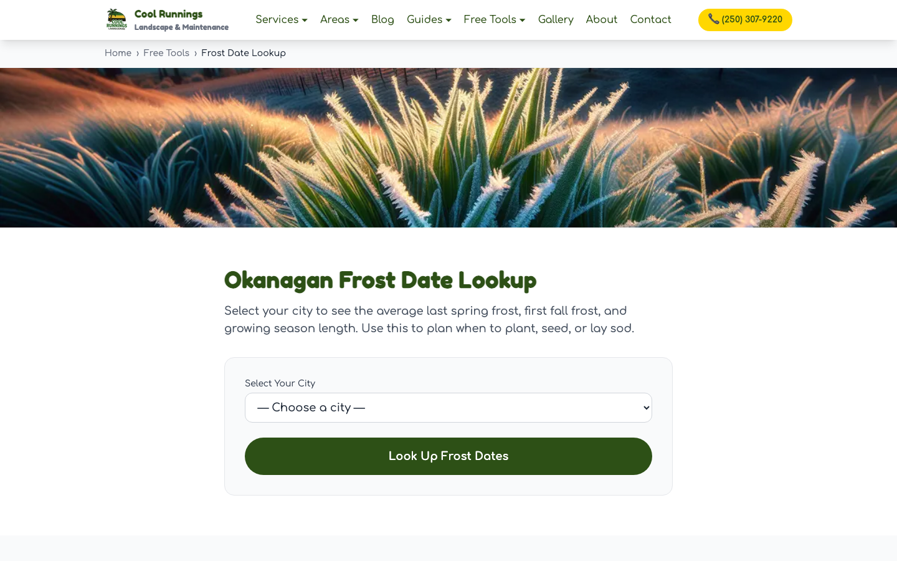

in the latest 28 days
Back to selected work
A local search magnet.
Cool Runnings had strong word of mouth, but no website or measurable search presence. I built the site and the system behind it: regional data, local pages, practical tools, useful content, and a feedback loop that keeps improving what ranks and generates leads.
What changed.
Google Search Console and GA4. Latest 28 days. Last refreshed July 13, 2026. The action total is a verified minimum until direct Business Profile reporting is connected.
average position 1-10
average position 1-10
forms, website calls, and WhatsApp clicks
client-reported since launch
A local search system that compounds.
The website was the foundation. The scalable layer combines canonical business inputs with regional weather, frost dates, planting zones, growing seasons, and local context. Structured JSON records then feed one renderer that produces connected search pages without flattening every place into the same copy.
Canonical inputs
cities.json stores six service areas with weather context, frost dates, planting and hardiness zones, growing seasons, coordinates, neighbourhoods, and regional detail. services.json stores six service definitions, including base copy, inclusions, process, FAQs, photos, and related services.
cities.json6 service areasLocal conditionsservices.json6 servicesBase service data
Gemini enrichment
A generator crosses the six cities with the six services and sends each canonical pair to Gemini 2.5 Flash. The result is a 36-record enrichment matrix, with local detail kept in structured fields rather than generated page markup.
{
"localChallenges": "...",
"soilAndTerrain": "...",
"seasonalNotes": "...",
"neighborhoodTips": "...",
"projectExample": "...",
"localFaqs": [ ... ],
"keywordVariants": [ ... ]
}JSON output and retry
Each response must parse as JSON and contain the required city, service, content, FAQ, and keyword fields before it is written to city-service-content.json. The main run retries a failed pair once; a separate recovery script finds missing city-service keys, retries each up to three times, and merges successful records back into the file.
6 cities x 6 services
↓
city-service-content.json
↓ missing key
retry-failed-content.js
↓
merge successful recordsRenderer and discovery
build.js joins each enrichment record to its canonical city and service data, then renders /services/[service]/[city]/. The template adds canonical URLs; LocalBusiness, Service, FAQ, and breadcrumb structured data; links to city and service hubs, sibling pages, and related resources; then includes every generated route in sitemap.xml.


Separate guide system
Guides do not come from the Gemini city-service matrix. A deterministic JavaScript generator builds cost-guide and seasonal-checklist records as JSON. The current guides.json library contains 66 records: 30 cost guides, 30 checklists, and six additional guides and comparisons. A dedicated guide renderer adds article, FAQ, breadcrumb, and HowTo data where available.
66 guide recordsseparate deterministic JSON library
Useful work earns attention.
The strongest pages are not generic location swaps. They solve actual local problems: when to water, what materials cost, how much sod to order, and when frost is likely.
Open the sod calculator